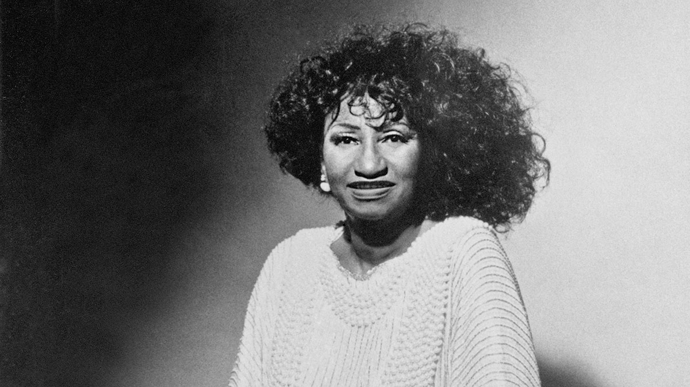

MUS 302 · What to Listen for in Music
Module 1: Orientation and Methodology · Listening Guide · Track 2 of 4
Track 2 Fania All-Stars with Celia Cruz, "Quimbara" (1974, Live in Africa)

Context
Celia Cruz before Fania: Cuba, Sonora Matancera, exile
Celia Cruz was already one of the most accomplished singers in Latin music before ever signed her. She was born in Havana in 1925, in the working-class neighborhood of Santos Suárez. She came up through in the late 1940s, recorded with the Coro Yoruba y Tambores Batá (a group performing Afro-Cuban music), and in 1950, at twenty-four, became the lead singer of . The Sonora Matancera, founded in 1924 in the city of Matanzas, was already a famous Cuban orchestra. Cruz was the first Black woman to front the band. The Cuban listening public initially rejected her in favor of her white Puerto Rican predecessor, Myrta Silva. Cruz won them over within months, and her musical relationship with the Sonora Matancera lasted fifteen years and produced 188 recorded songs. Cuban biographer Rosa Marquetti Torres, in her book Celia in Cuba, has argued that Cruz "was a prophet in her land" before she ever left, and that the standard narrative crediting Fania Records with making Cruz a star erases the decade and a half of work that came before.
On July 15, 1960, the Sonora Matancera flew from Havana to Mexico City for what was supposed to be a routine concert tour. Within months of arriving, the entire band decided not to return to Cuba. Cruz, who had grown up under the dictatorship and lived through the of 1959, found that Fidel Castro's new government had nationalized the music industry, closed many of the cabarets and clubs where she had built her career, and was demanding that artists endorse the regime. She and the rest of the band stayed in Mexico, then crossed into the United States. Cruz never returned to Cuba. Castro, infuriated by what he treated as a defection, formally barred her from re-entering the country. He continued to bar her even when her mother was dying in 1962. Cruz lived the rest of her life in , ultimately settling in New Jersey with her husband Pedro Knight, the Sonora Matancera's second trumpet, whom she married in Connecticut in 1962.
Through the 1960s, Cruz built a second career in the United States. She recorded with Tito Puente in a string of albums beginning in 1966. She signed with the label. When Fania Records, founded in 1964 by Dominican flutist Johnny Pacheco and Italian-American lawyer Jerry Masucci, bought Tico in 1974, Cruz came to Fania as part of the acquisition. She was forty-eight years old, a veteran of nearly twenty-five years in professional music, with a global reputation already established in the Latin world. Fania's genius was not in making her a star. It was in placing her at the center of a pan-Latin musical movement that became .
What salsa was, and what Fania did
Salsa is not a single Cuban genre. It is the New York name for a fusion music that emerged in the 1960s and 1970s when Cuban musical forms (, , mambo, cha-cha-chá, ) met Puerto Rican styles, Dominican merengue, jazz harmony, and the urban experience of Caribbean migrants in El Barrio (East Harlem) and the South Bronx. Fania Records was the engine of salsa's commercial rise. Pacheco assembled a roster of Cuban, Puerto Rican, Dominican, and Panamanian musicians and recorded them aggressively. The , formed in 1968, were a rotating supergroup of the label's most important players: Pacheco himself, percussionist Ray Barretto, trombonist and bandleader Willie Colón, vocalists Héctor Lavoe, Cheo Feliciano, Rubén Blades, Pete "El Conde" Rodríguez, and many others. They recorded primarily live, capturing the atmosphere of New York salsa concerts where extended , audience interaction, and (the section, where the lead singer trades phrases with the chorus) defined the music. Their 1971 concert at the Cheetah Club in New York and their 1973 concert at Yankee Stadium are widely treated as foundational documents of the salsa era. Music historian César Miguel Rondón, in The Book of Salsa, describes salsa in this period as music made for and by working-class Latin migrants in New York, music that articulated their experience and gave it a form.
The song "Quimbara" itself was written not by Cruz but by Junior Cépedes, a Puerto Rican composer. It first appeared on Celia & Johnny, the 1974 studio album credited to Cruz and Pacheco, which became her commercial breakthrough in the United States. The song's lyrics are largely about rhythm and dance themselves. Quimbara is an onomatopoeia, the sound of percussion. The song is a vehicle for what salsa does best: lay down a powerful rhythmic engine, give the singer space to celebrate it, and open the song into an extended montuno section where the band stretches out.
Zaire 74: the festival, the politics, the homecoming
In September 1974, the Fania All-Stars traveled to Kinshasa, Zaire (now the Democratic Republic of the Congo) to perform at , a three-day music festival held September 22 through 24 at the Stade du 20 Mai. The festival had been conceived by South African trumpeter Hugh Masekela and American producer Stewart Levine, who had been roommates at the Manhattan School of Music, and was promoted by Don King in connection with the upcoming Muhammad Ali / George Foreman heavyweight title fight (the ), originally scheduled for late September. When Foreman suffered an eye injury that delayed the fight by six weeks, the festival kept its dates. Eighty thousand people attended over three days.
The lineup mattered. Thirty-one acts performed: seventeen from Zaire and fourteen from outside the African continent. The American performers included James Brown, B.B. King, Bill Withers, the Spinners, the Crusaders, and the Fania All-Stars with Celia Cruz. The African performers included Tabu Ley Rochereau, Franco and TPOK Jazz, Miriam Makeba, Manu Dibango, and Orchestre Stukas. Wikipedia's entry on Zaire 74, drawing on the documentary record, describes the festival's purpose as being "to present and promote racial and cultural solidarity between African American and African people." The framing here is important and complicated. The festival was funded in part by the dictator , who used the event to promote a vision of "authenticité africaine" that served his political interests. Some performers, including Zairean singer Abeti Masikini, addressed Mobutu directly in their introductions. Pan-African Music magazine notes that this solidarity gesture sat uneasily alongside the realities of Mobutu's rule. The contradiction does not negate the historical significance of what happened on that stage; it complicates it.
For Celia Cruz specifically, the performance at Zaire 74 carried a particular weight. She was an Afro-Cuban performer whose musical roots in Santería, in the traditions, in son and rumba, were directly traceable to West and Central African musical practices that had survived the Middle Passage and continued in the Caribbean for centuries. To bring those traditions back, in their Cuban-Caribbean New York form, to a stadium in Kinshasa, in front of an African audience, was a kind of homecoming for a music that had been transformed by displacement. Cuban musicologist Rosa Marquetti Torres has emphasized how aware Cruz was of her own Afro-Cuban roots and how those roots shaped her artistic identity. The recording you will hear is from this festival. It is captured in the documentary film Celia Cruz and the Fania All-Stars in Africa (also released as Live in Africa or Salsa Madness), and was later included as part of the 2008 documentary Soul Power directed by Jeffrey Levy-Hinte.
What the recording does
Salsa as performed by the Fania All-Stars is built on a particular kind of ensemble logic. Underneath everything is the , a two-bar rhythmic pattern of either three-then-two or two-then-three accents that organizes the entire band. Above the clave sit multiple percussion layers: congas (the pattern played by Roberto Roena or Ray Barretto), timbales, bongos, often a cowbell. The piano plays a montuno, a syncopated repeating figure. The bass plays the típico Latin pattern that anticipates the downbeat rather than landing on it. The horns (trumpets, trombones) deliver mambos (instrumental section figures) and respond to the lead singer in (chorus answers). Over all of this, the lead singer (the ) improvises in the montuno section, trading phrases with the chorus.
What Cruz brought to this ensemble was a vocal style trained in fifteen years of Cuban Sonora Matancera work. Her voice was big, declarative, capable of cutting through a full salsa band without amplification. She was famous for the improvisational soneos she would deliver in the montuno sections, often with her signature shout of which began as a comment on a sweet rum at a Miami restaurant and became her trademark. In the live Zaire performance you will hear, the band is at peak form. The recording is six minutes and thirty-nine seconds long, more than half of which is montuno: the band stretching out, Cruz exchanging phrases with the chorus, the percussion building intensity, the audience responding.
Things to listen for
The studio version of "Quimbara" is in the of E , in , at a of 120 . Compare that to "A Change Is Gonna Come," which sits at about 65 BPM in 12/8 time. Cruz and Pacheco are moving at almost exactly twice the speed. Where Cooke rocks slowly through four big beats divided into triplets, "Quimbara" drives through four crisp beats per measure, with eighth notes running underneath like footwork. The recording you are listening to, the live Zaire 74 performance, may sit in a slightly different key (live salsa bands often transpose to suit the singer's voice on a given night), but the rhythmic feel is the same. Underneath everything is the , the foundational two-bar rhythmic pattern of salsa, which we will return to in the fourth listening prompt. The song was composed by Junior Cepeda, a 20-year-old Puerto Rican songwriter who pitched it to Pacheco in a hotel lobby and died a year later at twenty-one. It was his most famous composition.
First, the timbre of Cruz's voice. Bright, full, declarative, projecting forward, designed to cut across an outdoor stadium and a dense band without losing its edge. She is not crooning. She is calling. Listen to how she shapes vowels at the high end of her register: the "a" in "Quimbara," the "u" in "cumba," the held notes at the end of phrases. There is almost a horn-like attack to her vocal entries, a quick onset and a sustained tone, more like a brass instrument than the smooth crooning of a Frank Sinatra or even of Cooke. This is a vocal style trained inside the Cuban and traditions, where the lead singer needs to be heard above an ensemble of percussion, horns, and chorus. Notice also that Cruz's voice has very little of the kind we heard in Cooke. Her sound is more polished, more concentrated, with the emotional intensity coming from rhythmic and dynamic choices rather than from the catch in the voice. Different traditions, different relationships to vulnerability. Her signature shouts are themselves vocal gestures, a call across the band that signals a moment of peak energy.
Second, the texture. The recording opens at full density. Multiple percussion instruments (congas, timbales, bongos, cowbells), piano, bass, four-piece horn section, lead voice, chorus, all stacked from the first second. This is not a slow build like Cooke's; this is a band that walks on stage already in motion. Underneath the apparent chaos there is a precise division of labor. The conga plays the , the basic syncopated pattern that defines Afro-Cuban dance music. The bass plays a related tumbao that anticipates the downbeat rather than landing on it (notice that you almost never hear the bass play a beat one squarely; it always gets there a half beat early or late). The piano plays the , a syncopated repeating figure that bridges the harmony and the rhythm. The timbales player is on (the drum shells, played with sticks) during the calmer sections, and switches to (a large cowbell) when the song heats up. You do not need to identify each instrument. You do need to hear that the texture is built out of distinct, locked-together layers, each of which contributes a specific rhythmic and melodic role. This is how salsa expresses what the section calls "the band as the message."
Third, the form. Salsa songs typically have a two-part structure that is very different from the form we discussed in Cooke. The first section is called the (literally "body"), where the lead singer presents the song's main lyrics over a moderately energetic groove. After the cuerpo, the song transitions, usually with a percussion or horn break, into the montuno section, where the lead singer (the ) and the chorus (the ) trade phrases in , and the band plays extended improvisations called in the horn section. The montuno can extend as long as the energy supports it, which is why a song like "Quimbara" runs 6:39 in this live version and just under 5 minutes in the studio version. More than half of this recording is montuno. The cuerpo presents the song; the montuno is the song. Pay attention to the moment of transition (somewhere in the first third of the recording) when the band breaks open and the sonero starts trading lines with the chorus. You should be able to feel that shift: the song stops moving forward through new material and starts spiraling around a single repeated phrase, with Cruz around it. Notice also how the montuno section keeps building intensity through repetition rather than through new musical content. The phrase "Quimbara quimbara cumba quim bamba" returns and returns, but each return arrives differently because Cruz throws a different improvisation against it.
Fourth, the rhythmic foundation, and especially the clave. Underneath everything in salsa is the clave, a two-bar rhythmic pattern of either three accents in the first bar followed by two accents in the second bar (called ) or the reverse ("2-3 son clave"). The pattern is asymmetric and it never resolves on a regular beat: it floats slightly off the main pulse, creating constant rhythmic tension and release. This is what makes salsa feel the way it feels. Once you can hear the clave, you can hear it underneath every other instrument. Try to find it in this recording. The clave is sometimes played explicitly on a pair of wooden sticks (also called claves, the instrument), but it is more often implied: the percussionists, the piano montuno, the bass tumbao, the horn punctuation, are all phrased relative to the clave even when no one is striking it. The clave is what musicians mean when they say a song is "in clave." The rhythm gives salsa its dance pulse. In this performance you may also hear the audience clapping the clave: 80,000 people in Kinshasa, finding it together. That moment, the audience clapping the foundational rhythm of an Afro-Cuban tradition back to a Cuban band performing in Africa, is the song's homecoming made audible.
Reflective question
Cruz performed this song at a stadium in Kinshasa, on the same weekend James Brown was performing at the same festival, in front of 80,000 people in an African country where her own Afro-Cuban musical roots had originated centuries earlier. How does that context change what you hear, if at all? What is the relationship between music and the place where it is heard? And what do you make of the fact that this homecoming was funded by an authoritarian government that used it for its own political purposes? Music does not float free of the conditions that produce it. What conditions are at work here?
Sources for this section
Marquetti Torres, Rosa. Celia in Cuba, 1925–1962. Cuban biography focused on Cruz's pre-exile career; quoted from interview at celiacruz.com. Argues against the conventional narrative that Fania Records made Cruz.
Moore, Robin D. Music and Revolution: Cultural Change in Socialist Cuba (2006). Useful on the Cuban Revolution's effect on the music industry and the conditions Cruz left.
Rondón, César Miguel. The Book of Salsa: A Chronicle of Urban Music from the Caribbean to New York City (English edition, 2008; original Spanish edition 1980). The standard reference on Fania-era salsa, by a Venezuelan music journalist who covered the scene firsthand.
National Museum of African American History and Culture. "Celia Cruz." Smithsonian Latinx museum biography. Useful for cross-checking dates and career arc.
Library of Congress. "Celia Cruz at 100." In The Muse blog post by Library of Congress staff (November 2025), with notes on "Quimbara," Junior Cépedes as composer, and the Celia & Johnny album.
"Zaire 74." Wikipedia entry, well-sourced from the documentary record, including When We Were Kings (1996, dir. Leon Gast) and Soul Power (2008, dir. Jeffrey Levy-Hinte).
Pan-African Music. "Zaire 74: Africa and the Black Americas reunited in Kinshasa." Useful on the festival's political complications and Mobutu's role.
Music Origins Project. "Celia Cruz and The Fania All-Stars performed in Zaire, Africa in 1974." Provides context on Don King's role and the festival lineup.